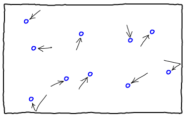
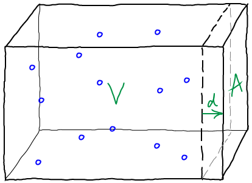

Although ideal particles do not react or bind, their statistical/thermodynamic behavior in the various states (e.g., bound or not, reacted or not) can be used to build powerful models - e.g., for transporters transporters.
But in the ideal gas - and in mass-action kinetics - no such crowding effects occur. All molecules are treated as point particles. They do not interact with one another, although virtual/effective interactions occur in a mass-action picture. (We can say these interactions are "virtual" because the only effect is to change the number of particles - no true forces or interactions occur.)

Ideal gases can perform work directly using pressure. The molecules of an ideal gas exert a pressure on the walls of the container holding them due to collisions, as sketched above. The amount of this pressure depends on the number of molecules colliding with each unit area of the wall per second, as well as the speed of these collisions. These quantities can be calculated based on the mass $m$ of each molecule, the total number of molecules, $N$, the total volume of the container $V$ and the temperature, $T$. In turn, $T$ determines the average speed via the relation $(3/2) \, N \, k_B T = \avg{(1/2) \, m \, v^2}$. See the book by Zuckerman for more details.All these facts can be combined - consult a physics book - to yield the ideal gas law relating pressure $P$ to the other quantities: \begin{equation} \label{eqstate} \idl{P} \, V = N \, k_B \, T \end{equation}

We can calculate the work done by an ideal gas to change the size of its container by pushing one wall a distance $d$ as shown above. We use the basic rule of physics that work is force ($f$) multiplied by distance and the definition of pressure as force per unit area. If we denote the area of the wall by $A$, we have
\begin{equation} \label{workSimple} W = f \, d = (f/A)\,(A\,d) = P \, \Delta V \end{equation} If $d$ is small enough so that the pressure is nearly constant, we can calculate $P$ using \eqref{eqstate} at either the beginning or end of the expansion. More generally, for a volume change of arbitrary size (from $V_i$ to $V_f$) in an ideal gas, we need to integrate: \begin{equation} \label{work} \idl{W} = \int_{V_i}^{V_f} \idl{P} \, dV = \int_{V_i}^{V_f} \frac{N \, k_B \, T}{V} \, dV = N \, k_B \, T \ln{ \frac{V_f}{V_i} } \end{equation} which assumes the expansion is performed slowly enough so that \eqref{eqstate} applies throughout the process.Does the free energy tell us anything about work? If we examine the free energy change occuring during the same expansion as above, from $V_i$ to $V_f$ at constant $T$, we get
\begin{align} \idl{F}(N, V_f, T) &- \, \idl{F}(N, V_i, T) \nonumber \\ &= N \, k_B T \left ( \ln \frac{N \, \lambda^3}{V_f} - \ln \frac{N \, \lambda^3}{V_i} \right ) \nonumber \\ &= -N \, k_B T \left ( \ln \frac{V_f}{V_i} \right ) \label{deltaF} \end{align}Comparing to \eqref{work}, this is exactly the negative of the work done! In other words, the free energy of the ideal gas decreases by exactly the amount of work done (when the expansion is performed slowly). More generally, the work can be no greater than the free energy decrease. The ideal gas has allowed us to demonstrate this principle concretely.
The mathematical relation is \begin{equation} \label{fFromZ} F(N, V, T) = -k_B T \ln Z(N, V, T) \end{equation} where $Z$ is defined by \begin{equation} \label{z} Z(N, V, T) = \frac{\lambda^{-3N}}{N!} \int_V d\rall \, e^{-\left. U(\rall) \right/ k_B T} , \end{equation} where $\lambda(T) \propto 1/\sqrt(T)$ is the thermal de Broglie wavelength (which is not important for the phenomena of interest here), $\rall$ is the set of $(x,y,z)$ coordinates for all molecules and $U$ is the potential energy function. The factor $1/N!$ accounts for interchangeability of identical molecules, and the integral is over all volume allowed to each molecule. For more information, see the book by Zuckerman, or any statistical mechanics book.
The partition function can be evaluated exactly for the case of the ideal gas because the non-interaction assumption can be formulated as $U(\rall) = 0$ for all configurations - in other words, the locations of the molecules do not change the energy or lead to forces. This makes the Boltzmann factor exactly $1$ for all $\rall$, and so each molecule's inegration over the full volume yields a factor of $V$, making the final result \begin{equation} \label{zidl} \mbox{Ideal Gas:} \hspace{0.5cm} \idl{Z}(N, V, T) = \frac{\lambda^{-3N}}{N!} V^N . \end{equation} Although \eqref{zidl} assumes there are no degrees of freedom internal to the molecule - which might be more reasonable in some cases (ions) than others (flexible molecules) - the expression is sufficient for most of the biophysical explorations undertaken here.
The combination of \eqref{fFromZ} and \eqref{zidl} can be used to derive \eqref{fIdeal} in conjunction with Stirling's approximation for large $N$. See a statistical mechanics book for details.